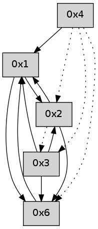

>> << IDX [start] -100 -25 -5 +0 +5 +25 +100 [355.009593964]
 Previous packets
----------------------------------------------------------------------
350.038557 beacon01(adaf) #0 coord=01,02,05,03,04,06 cycle=432.0ms assoc
-- color-indic=0 64 8f 61
350.048517 beacon02(adaf) #0 coord=01,02,05,03,04,06 cycle=432.0ms assoc 64 de 9e
350.058518 beacon05(adaf) #0 coord=01,02,05,03,04,06 cycle=432.0ms assoc 64 78 b4
350.068519 beacon03(adaf) #0 coord=01,02,05,03,04,06 cycle=432.0ms assoc 64 e4 90
350.078519 beacon04(adaf) #0 coord=01,02,05,03,04,06 cycle=432.0ms assoc 64 42 ba
350.088519 beacon06(adaf) #0 coord=01,02,05,03,04,06 cycle=432.0ms assoc 64 36 a6
----------------------------------------------------------------------
350.530664 beacon01(adaf) #0 coord=01,02,05,03,04,06 cycle=432.0ms assoc
-- color-indic=0 64 c2 66
350.540625 beacon02(adaf) #0 coord=01,02,05,03,04,06 cycle=432.0ms assoc 64 93 99
350.550625 beacon05(adaf) #0 coord=01,02,05,03,04,06 cycle=432.0ms assoc 64 35 b3
350.560625 beacon03(adaf) #0 coord=01,02,05,03,04,06 cycle=432.0ms assoc 64 a9 97
350.570627 beacon04(adaf) #0 coord=01,02,05,03,04,06 cycle=432.0ms assoc 64 0f bd
350.580627 beacon06(adaf) #0 coord=01,02,05,03,04,06 cycle=432.0ms assoc 64 7b a1
350.597295 [Hello(1): seq=46 sym=2,6,4 sysInfo= stat=2:6,0,0,0/6:6,0,0,0/4:0,0,0,0]
----------------------------------------------------------------------
351.022772 beacon01(adaf) #0 coord=01,02,05,03,04,06 cycle=432.0ms assoc
-- color-indic=0 64 06 09
351.032733 beacon02(adaf) #0 coord=01,02,05,03,04,06 cycle=432.0ms assoc 64 57 f6
351.042733 beacon05(adaf) #0 coord=01,02,05,03,04,06 cycle=432.0ms assoc 64 f1 dc
351.052733 beacon03(adaf) #0 coord=01,02,05,03,04,06 cycle=432.0ms assoc 64 6d f8
351.062734 beacon04(adaf) #0 coord=01,02,05,03,04,06 cycle=432.0ms assoc 64 cb d2
351.072734 beacon06(adaf) #0 coord=01,02,05,03,04,06 cycle=432.0ms assoc 64 bf ce
----------------------------------------------------------------------
351.514879 beacon01(adaf) #0 coord=01,02,05,03,04,06 cycle=432.0ms assoc
-- color-indic=0 64 4a b9
351.524839 beacon02(adaf) #0 coord=01,02,05,03,04,06 cycle=432.0ms assoc 64 1b 46
351.534841 beacon05(adaf) #0 coord=01,02,05,03,04,06 cycle=432.0ms assoc 64 bd 6c
351.544840 beacon03(adaf) #0 coord=01,02,05,03,04,06 cycle=432.0ms assoc 64 21 48
351.554841 beacon04(adaf) #0 coord=01,02,05,03,04,06 cycle=432.0ms assoc 64 87 62
351.564840 beacon06(adaf) #0 coord=01,02,05,03,04,06 cycle=432.0ms assoc 64 f3 7e
351.575967 [Hello(1): seq=47 sym=4 sysInfo= stat=4:0,0,0,0]
----------------------------------------------------------------------
352.006986 beacon01(adaf) #0 coord=01,02,05,03,04,06 cycle=432.0ms assoc
-- color-indic=0 64 8e d6
352.016947 beacon02(adaf) #0 coord=01,02,05,03,04,06 cycle=432.0ms assoc 64 df 29
352.026949 beacon05(adaf) #0 coord=01,02,05,03,04,06 cycle=432.0ms assoc 64 79 03
352.036947 beacon03(adaf) #0 coord=01,02,05,03,04,06 cycle=432.0ms assoc 64 e5 27
352.046950 beacon04(adaf) #0 coord=01,02,05,03,04,06 cycle=432.0ms assoc 64 43 0d
352.056948 beacon06(adaf) #0 coord=01,02,05,03,04,06 cycle=432.0ms assoc 64 37 11
----------------------------------------------------------------------
352.499095 beacon01(adaf) #0 coord=01,02,05,03,04,06 cycle=432.0ms assoc
-- color-indic=0 64 d0 b7
352.509056 beacon02(adaf) #0 coord=01,02,05,03,04,06 cycle=432.0ms assoc 64 81 48
352.519056 beacon05(adaf) #0 coord=01,02,05,03,04,06 cycle=432.0ms assoc 64 27 62
352.529056 beacon03(adaf) #0 coord=01,02,05,03,04,06 cycle=432.0ms assoc 64 bb 46
352.539057 beacon04(adaf) #0 coord=01,02,05,03,04,06 cycle=432.0ms assoc 64 1d 6c
352.549057 beacon06(adaf) #0 coord=01,02,05,03,04,06 cycle=432.0ms assoc 64 69 70
352.560690 [Hello(4): seq=149 sym=1 sysInfo= stat=1:13,0,0,0]
352.563455 [Hello(1): seq=48 sym=4 sysInfo= stat=4:0,0,0,0]
----------------------------------------------------------------------
352.991202 beacon01(adaf) #0 coord=01,02,05,03,04,06 cycle=432.0ms assoc
-- color-indic=0 64 14 d8
353.001164 beacon02(adaf) #0 coord=01,02,05,03,04,06 cycle=432.0ms assoc 64 45 27
353.011163 beacon05(adaf) #0 coord=01,02,05,03,04,06 cycle=432.0ms assoc 64 e3 0d
353.021164 beacon03(adaf) #0 coord=01,02,05,03,04,06 cycle=432.0ms assoc 64 7f 29
353.031165 beacon04(adaf) #0 coord=01,02,05,03,04,06 cycle=432.0ms assoc 64 d9 03
353.041164 beacon06(adaf) #0 coord=01,02,05,03,04,06 cycle=432.0ms assoc 64 ad 1f
----------------------------------------------------------------------
353.483311 beacon01(adaf) #0 coord=01,02,05,03,04,06 cycle=432.0ms assoc
-- color-indic=0 64 58 68
353.503272 beacon05(adaf) #0 coord=01,02,05,03,04,06 cycle=432.0ms assoc 64 af bd
353.533273 beacon06(adaf) #0 coord=01,02,05,03,04,06 cycle=432.0ms assoc 64 e1 af
353.544690 [Hello(4): seq=150 sym=1 sysInfo= stat=1:14,0,0,0]
353.548378 [Hello(3): seq=150 sym=6,1 sysInfo= stat=6:2,0,0,0/1:15,0,0,0]
353.550322 [Hello(6): seq=65 sym=1 sysInfo= stat=1:1,0,0,0]
----------------------------------------------------------------------
353.975418 beacon01(adaf) #0 coord=01,02,05,03,04,06 cycle=432.0ms assoc
-- color-indic=0 64 9c 07
353.985380 beacon02(adaf) #0 coord=01,02,05,03,04,06 cycle=432.0ms assoc 64 cd f8
353.995379 beacon05(adaf) #0 coord=01,02,05,03,04,06 cycle=432.0ms assoc 64 6b d2
354.005379 beacon03(adaf) #0 coord=01,02,05,03,04,06 cycle=432.0ms assoc 64 f7 f6
354.015381 beacon04(adaf) #0 coord=01,02,05,03,04,06 cycle=432.0ms assoc 64 51 dc
354.025380 beacon06(adaf) #0 coord=01,02,05,03,04,06 cycle=432.0ms assoc 64 25 c0
354.037087 [Hello(2): seq=648 sym=6,1 asym=3 sysInfo= stat=6:5,0,0,0/1:10,0,0,0/3:0,0,0,0]
----------------------------------------------------------------------
354.467526 beacon01(adaf) #0 coord=01,02,05,03,04,06 cycle=432.0ms assoc
-- color-indic=0 64 d1 00
354.477486 beacon02(adaf) #0 coord=01,02,05,03,04,06 cycle=432.0ms assoc 64 80 ff
354.487487 beacon05(adaf) #0 coord=01,02,05,03,04,06 cycle=432.0ms assoc 64 26 d5
354.497487 beacon03(adaf) #0 coord=01,02,05,03,04,06 cycle=432.0ms assoc 64 ba f1
354.507487 beacon04(adaf) #0 coord=01,02,05,03,04,06 cycle=432.0ms assoc 64 1c db
354.517487 beacon06(adaf) #0 coord=01,02,05,03,04,06 cycle=432.0ms assoc 64 68 c7
354.528907 [Hello(1): seq=50 sym=6,2 sysInfo= stat=6:0,0,0,0/2:0,0,0,0]
354.532801 [Hello(3): seq=151 sym=6,2,1 sysInfo= stat=6:3,0,0,0/2:0,0,0,0/1:15,0,0,0]
354.534587 [Hello(4): seq=151 sym=1 asym=3,6,2 sysInfo= stat=1:14,0,0,0/3:0,0,0,0/6:0,0,0,0/2:0,0,0,0]
----------------------------------------------------------------------
354.959633 beacon01(adaf) #0 coord=01,02,05,03,04,06 cycle=432.0ms assoc
-- color-indic=0 64 15 6f
354.969595 beacon02(adaf) #0 coord=01,02,05,03,04,06 cycle=432.0ms assoc 64 44 90
354.979596 beacon05(adaf) #0 coord=01,02,05,03,04,06 cycle=432.0ms assoc 64 e2 ba
354.989595 beacon03(adaf) #0 coord=01,02,05,03,04,06 cycle=432.0ms assoc 64 7e 9e
354.999594 beacon04(adaf) #0 coord=01,02,05,03,04,06 cycle=432.0ms assoc 64 d8 b4